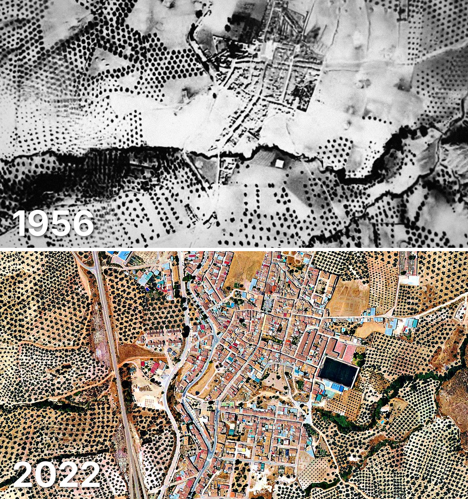

Villanueva de Tapia
Villanueva de Tapia tiene 775 edificios y 856 viviendas, y 1.391 habitantes en 2025. La mitad de sus edificios es de 1978 o posterior.
Cuándo se construyeron sus edificios
Desde 2015 se han terminado 17 edificios.

Las calles de Villanueva de Tapia con más viviendas
- Avenida la Constitución · 116 viviendas
- Calle Paseo de la Alameda · 83 viviendas
- Calle Iglesia · 62 viviendas
- Calle Nueva · 41 viviendas
- Calle Andalucía · 39 viviendas
- Calle Archidona · 32 viviendas
- Calle Granada · 32 viviendas
- Calle Coronel Hidalgo · 22 viviendas
- Calle el Nacimiento · 20 viviendas
Toda la información de Villanueva de Tapia en CASAS.ES →
Fotos de Villanueva de Tapia para publicar
Estas fotos aéreas de Villanueva de Tapia, de 1956 y de 2022, se pueden publicar gratis en un periódico, un blog, la web del ayuntamiento o las redes, citando la fuente como se indica debajo.

Descargar: las dos juntas · 1956 · 2022 (JPG, 1.400 px de ancho)


Texto listo para publicar
Villanueva de Tapia desde el aire: así era en 1956 y así es en 2022
Las dos fotos muestran el mismo encuadre de Villanueva de Tapia con 66 años de diferencia: arriba, el Vuelo Americano de 1956; abajo, la foto aérea del PNOA de julio de 2022. Hoy Villanueva de Tapia tiene 775 edificios y 856 viviendas, y 1.391 habitantes en 2025. La mitad de sus edificios es de 1978 o posterior. El 28 % de sus edificios ya estaba en pie antes de 1960.
Más datos de Villanueva de Tapia en CASAS.ES: casas.es/malaga/villanueva-de-tapia
Cita para copiar
Fotos: Vuelo Americano Serie B (1956-57) y PNOA 2022, cedidos por © Instituto Geográfico Nacional (CC BY 4.0, scne.es). Datos y composición: <a href="https://casas.es/malaga/villanueva-de-tapia/">los datos de Villanueva de Tapia en CASAS.ES</a>Descarga: municipios (CSV) · calles (CSV) · Wikidata (Q949909) · cómo usarlos en Python (dev.to) · también en OSF, Figshare y B2SHARE